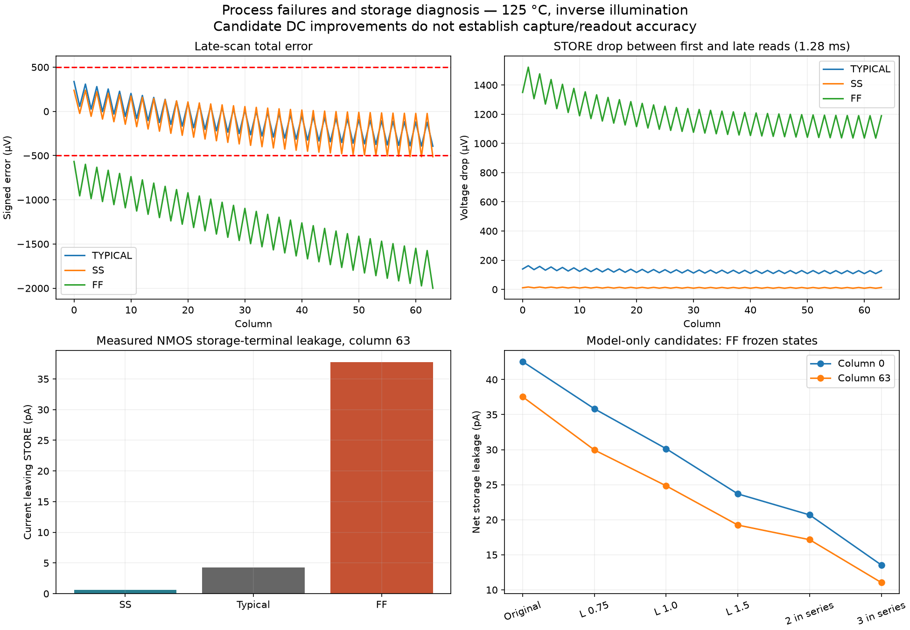

Both process cases finished, but neither passes total accuracy. SS reaches 512.924 µV and FF 2000.323 µV against 500 µV. Output tracking, numerical/event refinement and contrast pass. All four transients and 384 references are audited; 1,740 evidence files verify. Runtime was 2.92 hours. Watcher exit 1 intentionally reports the measured failures; all four simulator exits are 0.
SS worst total error separates into −389.105 µV output tracking and −123.819 µV settled-state change. FF worst separates into −3.303 and −1997.019 µV respectively. Settled-state change includes stored voltages and local supply/bias changes. FF STORE drops by as much as 1.522 mV between scans; SS drops by at most 0.016 mV.
Next step already investigated: five frozen-state DC probes identify the NMOS capture switch as the dominant fast-corner leakage path. At column 63 it drains 37.747 pA in FF, versus 4.252 pA typical and 0.613 pA SS. In FF, the PMOS injects about 0.234 pA, all eight MIM plates together leak about 0.036 pA, and modeled storage-follower gate current is zero. Direct clamp/probe current balance agrees within 0.00254 pA; saved DC voltages change by less than 0.000003 µV.
The initial three-terminal probe used subtraction of nearly equal voltages to infer clamp current and failed its pA-level balance check. Its artifacts remain retained. The second version adds all eight capacitor branches and a direct clamp-current probe; all five balance checks pass. Use these direct measurements for current attribution.
| NMOS capture switch | Column 0 | Column 63 |
|---|---|---|
| Original: one device, L = 0.5 µm | 42.573 | 37.551 |
| One device, L = 0.75 µm | 35.836 | 29.957 |
| One device, L = 1.0 µm | 30.138 | 24.841 |
| One device, L = 1.5 µm | 23.685 | 19.237 |
| Two series devices, each L = 0.5 µm | 20.689 | 17.154 |
| Three series devices, each L = 0.5 µm | 13.535 | 11.030 |
Six length cases and four series-stack cases completed with unchanged PDK corners and tolerances. These changes reduce DC leakage, but none is an accuracy-qualified correction. They have not been physically laid out or checked for capture resistance, charge injection, transient retention and process coverage. The original GDS is unchanged.

Next engineering task: compare lower-leakage capture-switch candidates through complete small-bank capture/readout transients, and test a modest acquisition-timing extension for SS with nonoverlapping ADC reset. Only then rebuild a selected physical candidate and rerun the bank matrix. Additional mixed-corner coverage follows correction of these known failures. No new hours-long batch is running.
Completion review · Error decomposition · Direct current probes · Length screen · Series-stack screen